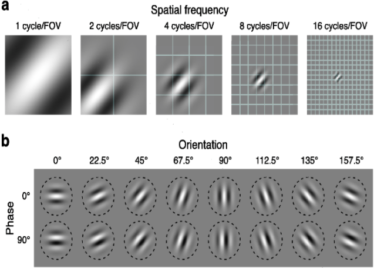
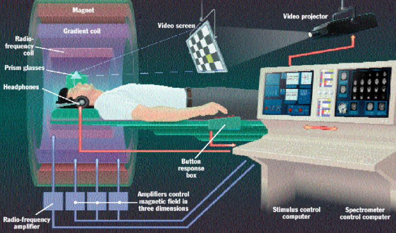
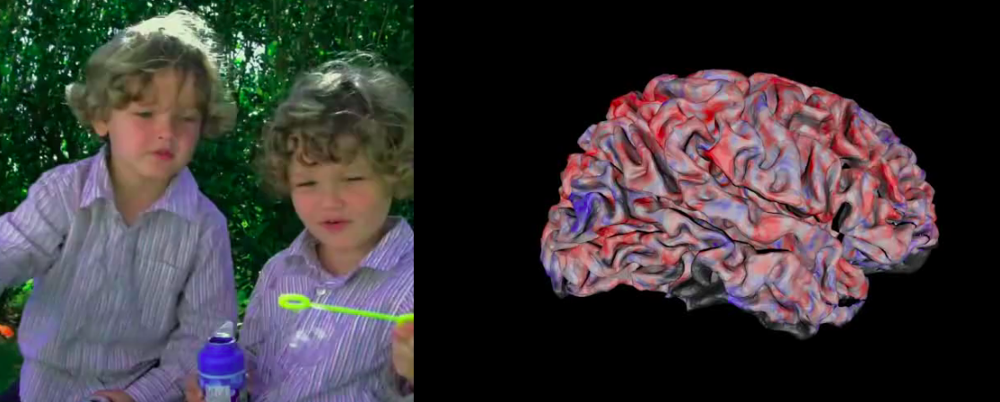

Statistical Models: Theory and Applications Bin Yu and Rebecca Barter
Exploratory data analysis
The term "exploratory data analysis" was brought into populat use by John W. Tukey via his book of the same name, although we would be misguided if we claimed that no-one plotted their data before Tukey came along. Visual data exploration dates back thousands of years give a brief summary of the history. Humans are very visual, a large part of our brain is based on processing and interpreting what we see and we are extremely good at making judgements based on visual prompts.
So what should we be visualizing?
raw data
summaries of your data
transformations of your data
results of your models or algorithms
Essentially at every step of your analysis, you can do some visualization. Visualization is a great way to identify the range of your data, as well as any problems with your data: perhaps there are missing values coded as a particular integer (perhaps as "0" or "999"), or strange values (perhaps someone mistyped a number). It is always a good idea to mix visualization with modelling (don't simply visualize your data and then proceed to modelling and assume that the visualization stage is over!).
In A tour through the visualization zoo by Jeffrey Heer, Michael Bostock and Vadim Ogievetsky (2010), the authors quote that
"Well-designed visual representations can replace cognitive calculations with simple perceptual inferences and improve comprehension, memory, and decision making. By making data more accessible and appealing, visual representations may also help engage more diverse audiences in exploration and analysis. The challenge is to create effective and engaging visualizations that are appropriate to the data."
Quotes by William Cleveland:
“Visualization is critical to data analysis. It provides a front line of attack, revealing intricate structure in data that cannot be absorbed in any other way. We discover unimagined effects, and we challenge imagined ones.”
“There are two components to visualizing the structure of statistical data – graphing and fitting. Graphs are needed, of course, because visualization implies a process in which information is encoded on visual displays. Fitting mathematical functions to data is needed too. Just graphing raw data, without fitting them and without graphing the fits and residuals, often leaves important aspects of data undiscovered.”
Expand on these and make more connections!
In summary: Visualization should be your first choice for your analysis when writing papers, giving presentations and for life.
A good graph is worth a thousand words: examples of visual data
Giuseppe Piazzi, Gauss and the discovery of Ceres
In 1801, Giuseppe Piazzi, an Italian Catholic priest, mathematician and astronomer, observed three sightings of a new "planet", and he recorded its positions in the sky and the time at which he saw it. The image below from Tennenbaum and Director, 1997 shows the three positions of Ceres observed by Piazzi. This is an example of visualization of data. It's not just boxplots and histograms (although they are informative too), we also want to simply look at what we are analyzing. What he observed was that this particular planet was moving slowly counter-clockwise against the "sphere of the fixed stars". This would have been very difficult to convey in text or numerical form, this visual preresentation is the most informative way of representing this data. We are given context such as the location of other stars relative to the new planet.

Piazzi was in fact making a lot of assumptions based on his observations. He assumed that the planets observed at the three different locations were the same, but why? There are a lot of alternative theories he could have come up with.
In fact it was Carl Friedrich Gauss, a German mathematician and physical scentist who made significant contributions to many fields (including number thoery, algebra, statistics, analysis, differential geometry, geophysics, electrostatistics, astronomy and optics) who actually showed, using Piazzi's three data points, that the three planets observed by Piazzi were one in the same; Ceres. He sed Kepler's second law of planetary motion to describe the trajectory of Ceres.
In fact, Gauss was using Least Squares (put in link) to describe Ceres' trajectory. Isn't it amazing that these Gauss and Piazzi were able to get so much information from only three data points. They certainly didn't need "big data"! It's not really about how much data you have, but rather it's about how much information each observation contains.
Napoleon's invasion of Russia
You could write entire books to even summarize the events in Napoleon's invasion of Russia, but to obtain a concise, yet complete, summary, visualization offers far superior tools as Charles Minard's map (below) shows. Here, Minard is able to simultaneously plot in two dimensions six different types of data. The plot contains substantial amounts of information about the progression of Napoleon's army. There is geographic information (the distance travelled, the longitude and latitude), the direction of travel, the number of troops in Napoleon's army, the temperature and the location relative to specific dates.

However, not all graphics are created equal. Below we show another example of a plot designed to show the same information. Although Minard's plot above removes some of the detailed geographical information, it actually portrays the the viewer the information in a more concise but substantially more interpretable and understandable way. The map below is too noisy and cluttered that it becomes confusing and it is difficult to extract the useful information.

Neuroscience: Hubel and Wiesel's cat experiment
Hubel and Wiesel (1959) conducted some of the pioneering research in showing how the visual system constructs complex representations of visual information from simple stimulus features. In one of their most notable experiments, they anesthetized a cat and propped its eyes open, so that the cat was physically seeing things, but was not conscious. They inserted a microelectrode into the primary visual cortes of the cat and they projected bright patterns (circle, line) on a dark screen in front of the cat. What they found was that some neurons fired rapidly when presented with lines at one angle, while others responded best to another angle.

This can be inerpreted as a causal inference problem: placing the bright object in the line of view of the cat caused the neurons to fire. This influential work was described by Professor David Ottoson of the Karolinsks Institue as
"The signal message that the eye sends to the brain can be regarded as a secret code to which only the brain possesses the key and can interpret the message. Hubel and Wiesel have succeeded in breaking the code"
There has been a recent new wave of research interest in the area of understanding how the brain processes visual stimuli, particularly utilizing deep learning algorithms. A modern direction that developed from Hubel-Wiesel's work in the way in which we computationally preprocess images for analysis. We use Gabor filters to model simple cells in the visual cortex, so Gabor functions can be thought of as the mathematical representation of the perception in the human visual system.
Gabor filters (see image below) correspond to functions which represent the particular spatial frequencies, locations and orientations that were discovered by Hubel and Wiesel's cat experiment in 1959. When analysing images, it is very common to decompose the image into the gabor functions for analysis.

Movie reconstruction using fMRI data: The Gallant Lab
This is a project that I was involved in with Jack Gallant's lab from the Redwood Center for Theoretical Neuroscience at UC Berkeley. The Gallant lab performed a number of functional magnetic resonance imaging (fMRI) exeriments, which measure oxygenated bloodflow in the brain. Measuring oxygenated blood flow can be considered as an indirect measurement of neural activity (the two processes are highly correlated).
fMRI takes measurements for each voxel (the brain is segmented into voxels which are $1 \times 1 \times 1$mm cubes used to segment a brain into voxels in an analagous way to which we can segment an image into pixels), each of which contains hundreds of thousands of neurons. Compare this modern aproach to Hubel and Wiesel's cat experiment which was measuring a single neuron firing, we can see that fMRI gives fairly imprecise measurements. However, given that we have billions of neurons, measuring a single neuron tells us little about how the entire brain functions.
Again, the data is visual: from each fMRI experiment, we obtain cross sectional images of the brain and the blood flow in each voxel. We placed three different subjects in an fMRI machine and showed them videos while measuring their brain activity as shown in the image below.

For example, below displays an image viewed by a subject in the fMRI machine and a reconstruction of their brain activity at that moment. The blue regions of the brain shows regions of low activity in the brain and the red regions correspond to high activity (is this right?).

Amazingly, we were able to use fMRI data to reconstruct short segments of film trailers shown to the subjects as the video below shows. There were 7200 seconds of training videos and 5400 seconds of test videos. Some people call this "mind-reading" although really it's just data visualization and prediction.
give more details of how we did this. It wasn't clear to me from the lecture...
Tools for visualizing data
There are a wide array of tools availble in multiple programming languages for visualizing data. The examples we present are based on the R programming language.
There are a number of considerations that one should take into any plotting adventure. Here we list a few: Fix up!
Continuous values are better mapped into continuous gradient scales, whereas discrete colours should be used to represent different categories.
Bright colours draw attention better than dull colours. For example, if you wish to have the viewers attention drawn to a particular point, colour it in a bright color!
Transparancy and point size (for example in scatterplots) should be utilized for large datasets so that more information can be portrayed without overplotting becomming an issue.
A smoothing line provides information about the overall trend prsnt in scatterplots or time series plots, especially when there are many data points overplotted ontop of one another.
Brushing can be used to effectively bring in other variables.
Motion (such as movies) an bring out structures that static representations cannot.
If you're using R, you should really be using the data visualization package ggplot2 designed by Hadley Wickam rather than the base R plotting tools. Many of the above considerations can be irritatingly difficult to achieve in most plotting languages but are incredibly easy and natural (not to mention aesthetically pleasing!) with ggplot2.
Often the most effective visualization tools are the simple ones.
Scatterplots and smoothing
- still extremely useful, but try to use transparency
Histograms
- Shows you how much data you have
Kernel estimation
doesn't show you how much data you have
nice and smooth: it's visually more appealing
Q-Q plots
- fancier than histograms
ggplot2 in R
Notes
A number of excellent resources for data visualization exist. Some of the traditional, yet still relevant, texts include The future of data analysis by Tukey (1962), Envisioning information by Edward R. Tufte (1990) and Visualizing data by William S. Cleveland (1993). Some more modern references include A tour through the visualization zoo by Jeffrey Heer, Michael Bostock and Vadim Ogievetsky (2010). For those interested in learning more about graphics in R, you need look no further than the works by Hadley Wickham, including his book ggplot2: Elegant Graphics for Data Analysis (Use R!) (2009) and that of his collaborators including the R Graphics Cookbook by Winston Chang (2013).